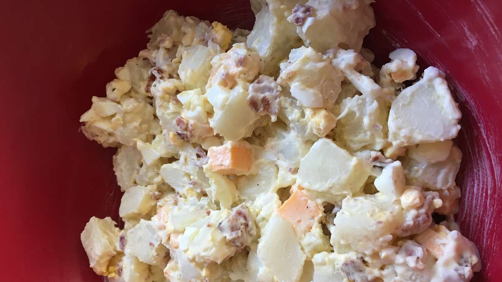

Chunky and Creamy Potato Salad

This potato salad includes goodies such as Cheddar, bacon, egg and broccoli! Sooo delicious!
Yummy Recipe
Ingredients
- 3 pounds yellow mini potatoes
- 12 slices bacon
- 5 hard-boiled eggs, chopped
- 1 cup chopped broccoli florets
- 1 cup diced Cheddar cheese
- 1 (8 ounce) bottle ranch salad dressing (such as Hidden Valley® Original Ranch®)
- 2½ teaspoons dried dill weed
- 1 teaspoon salt
- ½ teaspoon ground black pepper
Steps
- Place the potatoes in a saucepan of lightly salted water, bring to a boil, and cook until tender, about 20 minutes. Drain the potatoes in a colander, and let cool.
- Place the bacon in a large, deep skillet, and cook over medium-high heat, turning occasionally, until evenly browned and crisp, about 10 minutes. Drain the bacon slices on a paper towel-lined plate. Snip the cooked bacon into pieces with a scissors, or chop.
- In a large bowl, mix the mini potatoes, chopped bacon, hard-boiled eggs, broccoli, Cheddar cheese, ranch salad dressing, dill weed, salt, and pepper until thoroughly combined, and serve.